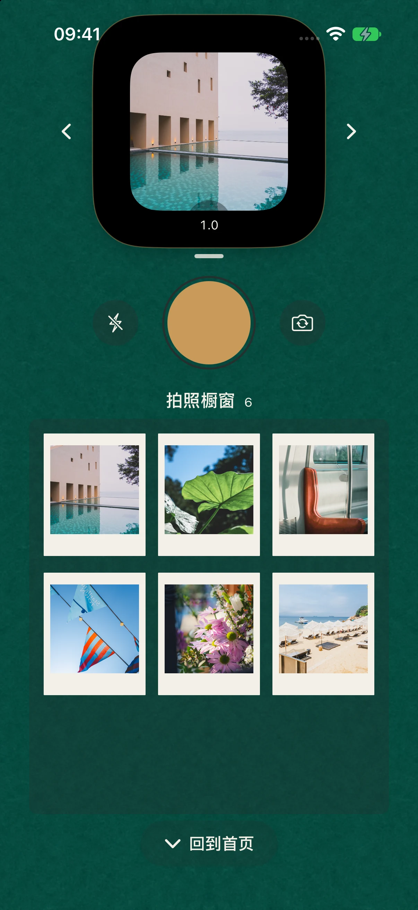

片笺小相机
把这一刻，写成一张片笺。
海边散步时，阳光刚好落在礁石上。你按下快门，想起上次和你一起走这条路的人。

首页里藏着一台胶片小相机
在 iPhone 或 iPad 上打开片笺，滑到首页顶部，再往下拉。带灵动岛的 iPhone 上，方形取景器就从灵动岛的位置展开。
取景时，先挑一款胶片或相机模拟。快门一按，屏幕上滑出一张相纸，刚才的光和颜色一点点显现。照片留在拍照橱窗，等你回来挑一张写成片笺。


给同一张照片换种颜色
以下三款胶片和重新显影功能适用于片笺 1.3.0 及后续版本。
- 晴光胶片
- 颗粒很轻，适合窗边光线和随手拍的日常。
- 晴海胶片
- 蓝色更深，阴影更浓，适合有蓝天和水面的晴日。
- 青野胶片
- 草木绿更鲜明，颗粒也更看得见，适合树影和草地。
拍完想换个颜色，可以在橱窗打开照片，点按下方的胶片名称，选另一款，再保存为新照片。先前那张也会留在橱窗里。
把它写给那个想起的人
从橱窗打开照片，点「制作片笺」。选一张喜欢的纸，用指尖写上几句。也许一句就够了。
「今天的海，还是这么蓝。」
写好后，把这张数字明信片留给自己，或分享给那位曾陪你走过海边的人。
在 App Store 查看片笺